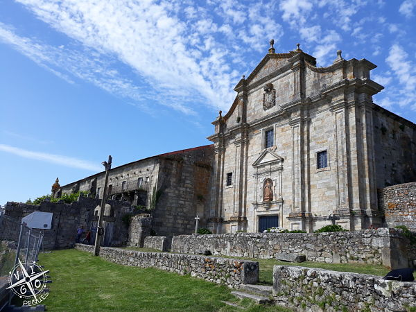
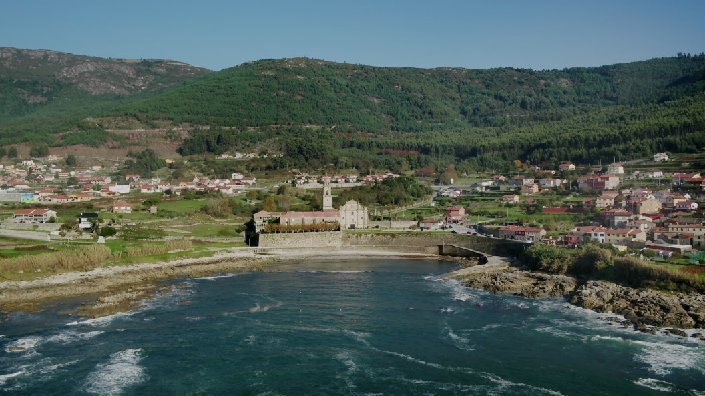
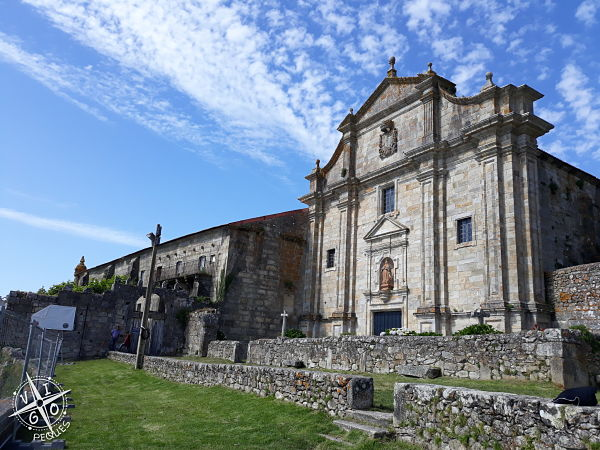
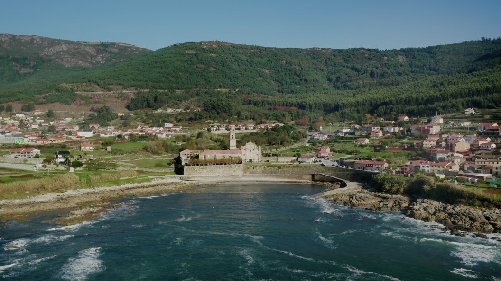

Da Idade de Bronce atopáronse machados e hai gravados rupestres nos montes que miran para a costa. Porén, en abril de 2010 o sitio do Sobreiro[5], tamén chamado de Boaventura, na parroquia de Burgueira, foi esnaquizado por máquinas que acondicionaban o terreo para unha plantación de kiwis[6]. Hai abondosos restos castrexos, entre os que destaca o sitio arqueolóxico de Bouza Fariña, en Mougás. Nel atopouse un altar de sacrificios (actualmente no Museo de Pontevedra) con epigrafía latina. En Viladesuso houbo unha vila romana na que se atopou unha ara (actualmente no Museo Diocesano de Tui). Mais a historia de Oia xira en volta do mosteiro cisterciense de Santa María de Oia. Fundouno Afonso VII en 1132, como bieto, sendo o seu primeiro abade Pedro de Incio. En 1185 aceptou a reforma do Císter, someténdose á abadía de San Bernardo de Claraval; en 1547 incorporouse á congregación cisterciense de Castela. O mosteiro foi desamortizado e vendido a particulares en 1835. A igrexa destinouse a igrexa parroquial baixo a advocación de Santa María a Real de Oia e desmembrándose da igrexa matriz, San Mamede de Pedornes.
 



| A Guarda | Ir a portada | O Rosal |